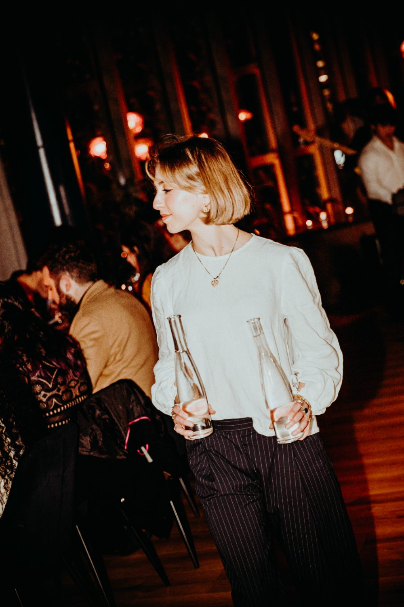

Corporate events · Christchurch CBD
Corporate events,
the Italian way
Client dinners that close the deal, team nights people turn up for, end-of-year functions worth the wait. Up to 240 guests, no venue hire fee, and a team that handles the night.
Impressive without trying too hard
Some venues feel like a conference room with catering. Franco feels like the best night out your company has had — pasta rolled in view, Negronis stirred to order, shared tables that get people talking.
In the CBD at The Crossing, so everyone can get there — and carry on afterwards.

Every kind of work occasion
Client dinners
A long table, a shared Italian menu and polished service.
Team dinners
Milestones, farewells and wins — the good seats by the open kitchen.
End-of-year parties
Seated or stand-up for the whole company. December goes first.
Cocktail functions
Stand-up evenings around the Negroni bar, spritzes by the tray.


Menus for a table in full swing
Shared set menus from 80 per person, canapés from 9, grazing tables from 40 per person — with spritzes, Negronis and a tidy wine list.
Speeches, presentations or something particular in mind? Tell us and we'll make it work.
Enquire
Let's plan your event
Send the date, the headcount and the kind of night — Ana-Maria will come back with availability and a tailored proposal.
Questions
How many guests can you host?
Up to 240 standing across both levels, or around 165 seated.
Is there a venue hire fee?
No — a food and beverage minimum spend instead, tailored to your event.
Do you offer set menus and dietaries?
Shared set menus from 80pp, canapé and grazing options, and full dietary coverage.
How easy is it to get there?
The Crossing, 166 Cashel Street, by H&M — car park in the same block, buses and tram minutes away.
How far ahead should we book?
For December and Friday nights, as early as you can. Midweek is often free at shorter notice.
The work do, sorted
December and Friday nights go first — enquire early.